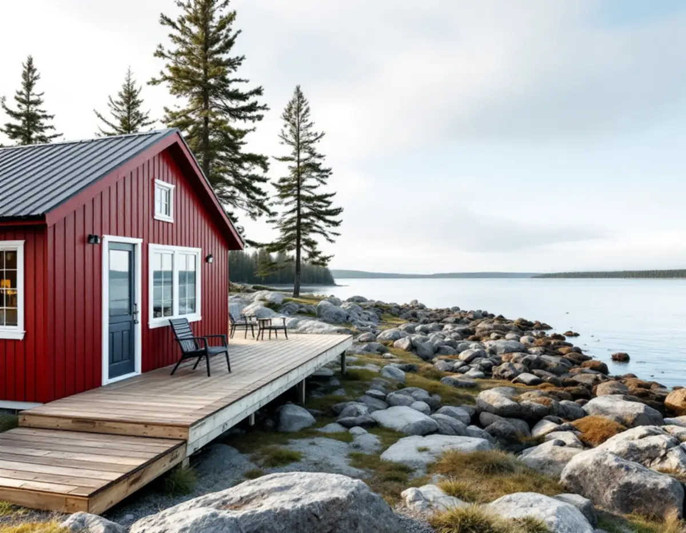
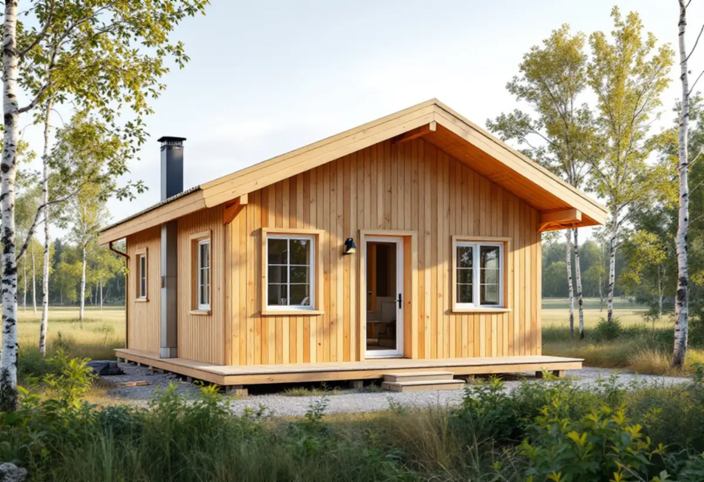

Läge och avstånd till vatten
Vi tar reda på om fastigheten ligger inom detaljplan och strandskydd innan något ritas.
Som snickare i Norrtälje bygger man för Sveriges mest fritidshustäta kommun. Uppdragen är ofta att göra ett sommarhus beboeligt året runt, bygga en altan eller gäststuga på landet eller laga panel och fönster – och nära vattnet kan strandskyddet styra mer än bygglovet.

Enligt SCB har Norrtälje 27 352 fritidshus, fler än någon annan kommun i Sverige. Kommunen beskriver sig som en av landets största landsbygdskommuner, med cirka 32 000 invånare på landsbygden, och skriver på sidan fakta och statistik att ungefär en fjärdedel av fritidshusens brukare vistas i kommunen större delen av året. Landsbygdsbefolkningen har ökat med cirka 60 procent sedan 1982.
I tätorterna ser det annorlunda ut. Norrtälje stad grundades 1622, och där finns villor och radhus i bostadsområden som Färsna och Vigelsjö. Rimbo växte runt järnvägsknuten och Hallstavik runt pappersbruket vid Edeboviken, och båda fick många villor efter andra världskriget.
För snickeriet är det två helt olika vardagar: i Rimbo en villa med uppfart och byggvaruhus nära, i skärgården ett hus där virket kanske ska fraktas sista biten med båt.

Ett hus byggt för somrarna saknar ofta det som ett helårshus behöver: tät klimatskärm, isolerade väggar och golv, en entré där man kan ta av sig vinterkläder och förvaring. Snickeriet är en stor del av ombyggnaden – nya regelväggar och golv, utbytta dörrar och fönster, ny panel där den gamla är rötskadad och kanske ett vindsrum.
Ofta byggs huset också till. En lovfri tillbyggnad får sammanlagt vara högst 30 kvadratmeter och inte gå över husets taknock, och tillbyggnader som gjorts lovfritt före 1 december 2025, som attefallstillbyggnad, takkupa och skärmtak, ska räknas in. Det skriver kommunen på sidan om lovbefriade åtgärder. Påverkas bärande delar krävs anmälan, och nya installationer för vatten, avlopp eller eldstad ska anmälas.
Vi börjar med en genomgång av huset och diskuterar i vilken ordning arbetena bör göras, så att inget behöver rivas upp igen. Större ombyggnader samordnar vi som en total entreprenad.
Strandskyddet gäller i regel 100 meter från strandlinjen, upp på land och ut i vattnet, och i vissa områden i Stockholms län är det utökat till 300 meter. Inom skyddet är det förbjudet att bland annat uppföra byggnader och tillbyggnader eller anläggningar utan dispens. Kommunen skriver på sidan om strandskyddsdispens att även bygglovsfria åtgärder, som friggebodar, attefallshus, staket och bryggor, kan kräva dispens.
En altan som är lovfri enligt plan- och bygglagen kan alltså ändå kräva strandskyddsdispens om den byggs nära vattnet. I områden med landskapsbildsskydd, vanligast kring kyrkor som på Arholma, prövar Länsstyrelsen ansökan. Kommunens kontaktcenter kan svara på om din fastighet ligger inom strandskyddat område.
Vi frågar därför tidigt hur långt det är till vattnet. Är dispens nödvändig väntar vi med att beställa material tills beslutet finns.
Stora delar av kommunen saknar detaljplan, och då gäller andra mått. Enligt kommunen får fristående lovbefriade byggnader inom detaljplan vara högst 30 kvadratmeter var och 45 sammanlagt, medan gränserna utanför detaljplan är 50 och 65 kvadratmeter. Nockhöjden får vara högst 4 meter inom detaljplan och 4,5 meter utanför. Begreppet attefallshus togs bort 1 december 2025 och ersattes av komplementbyggnad och komplementbostadshus.
För altaner har Boverket inga höjd- eller placeringsregler utanför detaljplan, så där kan en större altan byggas friare. Nära gräns, inom ett särskilt värdefullt område eller nära järnväg kan lov ändå krävas. Kommunen bedömer inte enskilda åtgärder via e-post eller telefon – den som vill ha ett bindande besked kan söka frivilligt lov. Mer om komplementbostadshus finns på sidan om attefallshus.
På öar utan fast förbindelse når man fastigheten bara med båt eller färja. Då planeras leveranser av virke och skivor så att allt kommer samtidigt, och rivningsvirke tas med tillbaka på samma sätt. Ett arbete på ett fritidshus läggs gärna under en period med stabilt väder, så att huset inte står öppet i höststormarna.
Vi utgår från Bromma och tar uppdrag i hela kommunen, från Rimbo och Hallstavik till kusten vid Grisslehamn. Längre resor samordnar vi så att besök och arbete samlas i färre turer.
Vi tar reda på om fastigheten ligger inom detaljplan och strandskydd innan något ritas.
Vi går igenom huset, mäter upp och noterar fukt, röta och hur huset används över året.
Vid en permanentning bestämmer vi tillsammans vad som görs först, så att inget behöver göras om.
Krävs strandskyddsdispens eller lov tar vi fram ritningar och underlag till ansökan.
Transporter planeras efter väg, färja eller båt.
Vi bygger i etapper och går igenom resultatet med dig på plats.
Rotavdrag gäller även för fritidshus som du äger och använder. Bor någon annan permanent i huset räknas det enligt Skatteverket inte längre som ditt fritidshus. Avdraget är 30 procent av arbetskostnaden, högst 50 000 kr per person och år och högst 75 000 kr tillsammans med rut. Resor och material ger inget avdrag.
En altan som byggs ihop med huset ger avdrag, liksom en tillbyggnad – även en gäststuga eller ett förråd som byggs ihop med huset. En helt ny fristående byggnad, till exempel en friggebod, gör det inte. Vi drar av beloppet direkt på fakturan.
Mest betyder omfattningen – en ny altan eller en hel permanentning – och hur mycket av det gamla som går att behålla. Avståndet, om material måste fraktas med båt och om dispens eller lov krävs påverkar också. Platsbesöket är kostnadsfritt och du får ett skriftligt kostnadsförslag.
Altan, väggar, dörrar och inredning.
Snickare i Stockholm →Takbyte, takbesiktning och plåtarbeten.
Takläggare i Norrtälje →Roslagen, skärgård och fritidshus.
Takrenovering i Norrtälje →Fritidshus, WC-tillstånd och brunn.
Badrumsrenovering i Norrtälje →Bruksvillor, sommarvillor och Roslagens trähus.
Fasadrenovering i Norrtälje →Roslagens hus, bruksorter och bidrag i Norrtälje.
Fönsterbyte i Norrtälje →Plankgolv i gamla gårdar och parstugor.
Golvläggare i Norrtälje →Gasolspis, vedspis och pentry i gäststugan.
Köksrenovering i Norrtälje →Kust, snö och Roslagens tak.
Takbyte i Norrtälje →